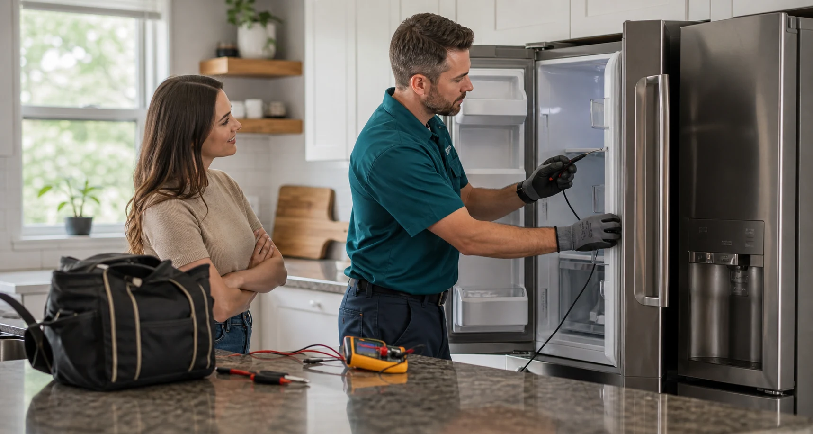

Refrigerators, freezers, ice makers, and cooling failures.

Cooling issues need fast, structured diagnostics.
Refrigeration service starts with temperature behavior, airflow, frost patterns, power, door sealing, and water system symptoms. The goal is to separate simple airflow or gasket problems from electrical, control, defrost, fan, valve, or sealed-system concerns.
Services covered
- Refrigerator not cooling, freezer too warm, fresh-food section freezing
- Ice maker not producing, dispenser not working, slow water flow
- Frost buildup, noisy evaporator or condenser fan, warm compressor area
- Door gasket replacement, thermostat and sensor problems, control board faults
Methods used
- Measure compartment temperatures and compare with customer symptom history
- Inspect condenser cleanliness, airflow channels, fan operation, and gasket contact
- Test switches, sensors, valves, and electrical continuity with safe access procedures
- Evaluate defrost cycle symptoms before recommending deeper sealed-system work
When customers usually request refrigeration help.
Food spoilage risk changes the urgency, so intake should capture how long the issue has been happening and whether either compartment still cools.
Warm refrigerator
Checks include airflow obstructions, evaporator fan operation, condenser coil condition, thermostat readings, and defrost symptoms.
Ice maker failure
Providers evaluate water supply, inlet valve response, fill tube freezing, temperature readiness, shutoff arm position, and module function.
Noise or vibration
Fan blades, motor bearings, compressor mounts, loose panels, drain pan contact, and leveling are reviewed before parts are suggested.
Water leaks
Door seals, drain line clogs, filter seating, dispenser lines, ice maker fill, and condensation paths are traced with towel-safe access.
Detailed refrigeration services
Refrigeration work often begins with basic performance checks before any part is recommended. Providers may service airflow, water delivery, controls, sensors, gaskets, fans, and defrost components depending on the symptom.
- Fresh-food section warm while freezer still cools
- Freezer frost buildup, defrost drain clogs, evaporator icing
- Ice maker fill problems, dispenser flow issues, filter housing leaks
- Condenser fan, evaporator fan, damper, thermistor, and board diagnostics
- Door gasket replacement, leveling, hinge alignment, and condensation checks
Tools and methods
A technician may combine temperature logging, airflow inspection, electrical testing, and visual frost-pattern review. Coil cleaning and gasket checks can solve some problems without unnecessary parts.
Separate urgent cooling loss from routine maintenance or water-system issues.
Identify whether the likely path is cleaning, adjustment, part replacement, or deeper diagnosis.
Capture timing, temperatures, and compartment behavior early.